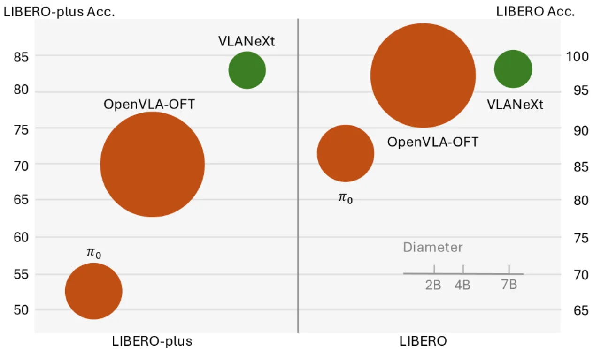
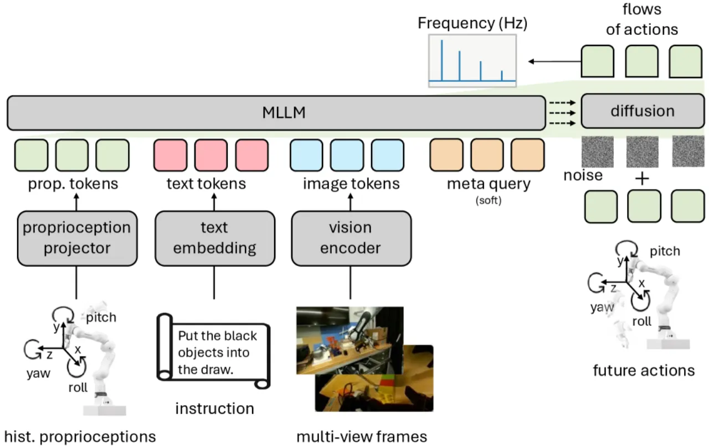
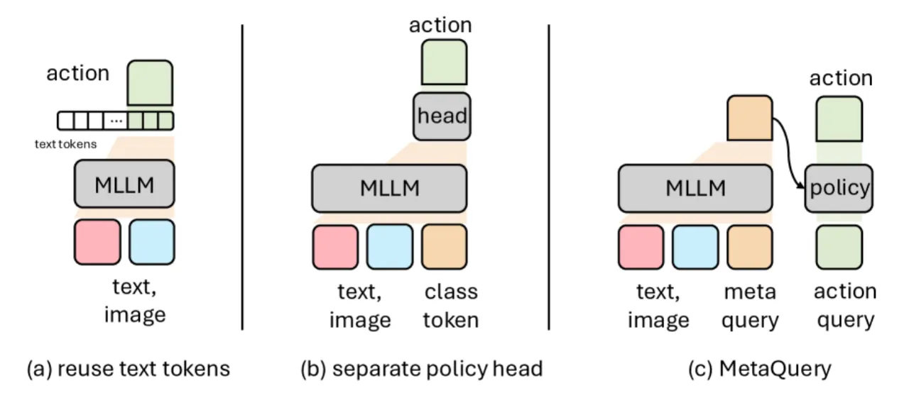
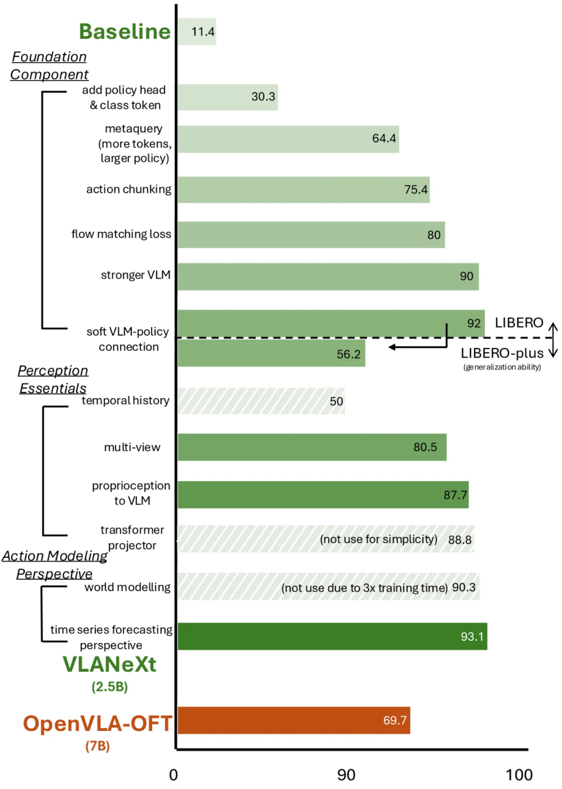
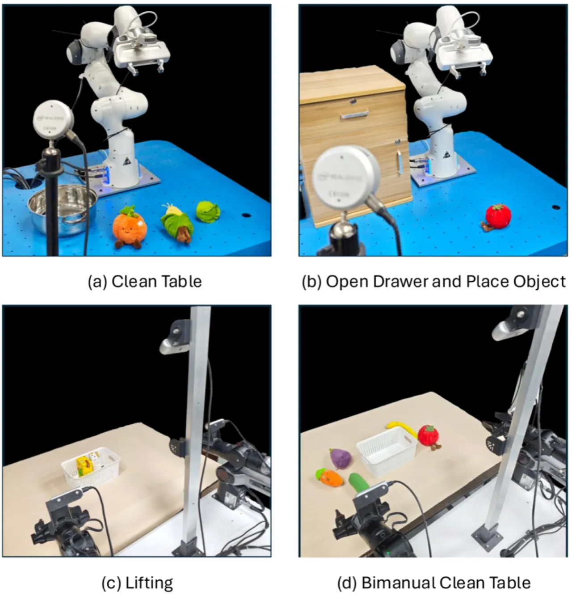

VLA 模型设计空间碎片化严重，不同方法之间缺乏统一的比较基准。本文以 RT-2 为基线，系统考察了基础组件、感知设计与动作建模三个维度的关键设计选择，提炼出 12 条实用准则，构建出 VLANeXt。以 2.5B 参数规模，VLANeXt 在 LIBERO 和 LIBERO-plus 基准上超越了参数量达 7B 的 OpenVLA-OFT，并在真实机器人操作任务中展现出强泛化性能。
当前 VLA（Vision-Language-Action）模型研究存在严重的设计碎片化问题：各方法在不同模型规模、不同数据集上独立提出各自的模块，缺乏公平的横向对比，导致社区难以判断哪些设计选择真正重要、如何系统地改进模型。
"We distill 12 key findings that together form a practical recipe for building strong VLA models."

本文选取 RT-2/OpenVLA 范式（预训练 VLM + 策略头）作为统一基线，在相同实验设置下逐步改变一个设计维度，严格量化每项改动的收益。这种受控实验思路揭示了此前被忽视却影响显著的设计规律。
VLANeXt 以 Qwen3-VL-2B 作为多模态语言主干，连接一个基于 16 个 meta-query token 的 12 层 Transformer 策略模块，通过 soft layer-wise 连接实现 VLM 与策略模块的信息交互，并采用 flow matching 目标对 chunk size=8 的连续动作序列进行预测，辅以频域 MSE 损失正则化。

本文通过消融实验系统验证了以下 12 条关键设计发现（每次仅改变一个变量）：

实验在 LIBERO 基准（四个套件：Spatial / Object / Goal / Long）和更具挑战性的 LIBERO-plus（含摄像头位置、光照、背景等扰动）上评估，同时在真实单臂与双臂机器人操作任务上与 OpenVLA-OFT 及 π₀ 对比。训练采用 10,000 步，batch size 256，学习率 1×10⁻⁴。

| 模型 | Spatial | Object | Goal | Long | Average |
|---|---|---|---|---|---|
| OpenVLA-OFT (7B) | 98.0% | 99.6% | 95.4% | 95.4% | 97.1% |
| VLANeXt (2.5B) | 99.0% | 99.2% | 96.6% | 94.8% | 97.4% |
| 模型 | LIBERO-plus Average |
|---|---|
| OpenVLA-OFT (7B) | 69.6% |
| VLANeXt (2.5B) | 83.9% |
在包含摄像头位置、光照和背景扰动的 LIBERO-plus 上，VLANeXt 以更小的参数量实现约 14% 的鲁棒性提升，验证了多视角感知、频域正则化等设计对泛化性的贡献。

| 任务 | 成功次数（/20） |
|---|---|
| 单臂桌面清理 | 14/20 |
| 单臂抽屉操作 | 11/20 |
| 双臂协同清理 | 11/20 |
| 双臂篮子搬运 | 15/20 |
消融实验揭示了以下显著规律：（1）多视角输入是单项收益最大的感知改动（+5.8%，LIBERO-spatial）；（2）VLM 主干选择对性能影响远超策略模块结构（Qwen3-VL vs. LLaMA 差距约 10%）；（3）历史帧在当前设置下无益，这与直觉相悖，可能源于视频预训练分布与机器人数据的不匹配；（4）"where information is injected matters as much as what information is used"——本体感知注入位置对性能影响显著。
论文明确指出，辅以未来帧预测的世界建模虽然有助于提升性能，但 "substantially higher training cost makes it less practical"，因此最终 VLANeXt 未包含此组件。这意味着世界建模带来的潜在增益被放弃以换取实用性。
Finding 7 表明添加多帧历史输入并不改善、甚至可能降低性能，但论文未深入分析根本原因，也未提出解决方案。如何让 VLA 模型有效利用时序历史信息仍是开放问题。
实验主要集中于 LIBERO 系列基准和 4 类真实机器人任务，涉及的技能多样性和场景复杂度有限，泛化至更广泛真实场景的能力有待进一步验证。
本文聚焦架构与训练目标的设计选择，对大规模预训练数据的影响分析较少。设计准则在数据量显著增大时是否依然成立，尚不清晰。